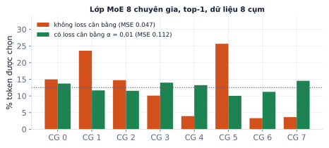
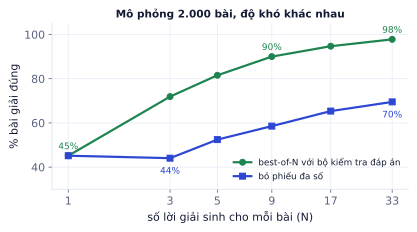

Giai đoạn P9 · Nâng cao và nghiên cứuTuần 40–45Có nội dung đầy đủ
Bài cuối phần kỹ thuật điểm qua những hướng đang định hình AI: Mixture of Experts (model lớn mà chạy rẻ), state space model (thay attention cho chuỗi rất dài), kéo dài context, và reasoning model học suy nghĩ lâu hơn bằng học tăng cường. Mục tiêu không phải nắm hết chi tiết, mà hiểu ý tưởng đủ để đọc bài báo mới và tự làm thí nghiệm nhỏ. Bài có hai thí nghiệm: cân bằng tải trong MoE, và bỏ phiếu đa số so với bộ kiểm tra đáp án.
Bức tranh chung
Vì sao cần học
Các model mới ra mỗi tháng đều kết hợp vài ý tưởng trong bài này: DeepSeek, Qwen3, Mixtral dùng MoE; các model "thinking" dùng RL với phần thưởng kiểm chứng được; nhiều model kéo context lên hàng trăm nghìn token. Hiểu ý tưởng giúp bạn đọc model card, chọn model đúng cho bài toán (một model MoE "30B" chạy nhanh như model 3B nhưng vẫn cần bộ nhớ của 30B), và chọn đề tài nghiên cứu.
Hai hướng mở rộng đang chạy song song:
Hướng
Ý tưởng
Kỹ thuật trong bài
Lớn hơn lúc train
nhiều tham số, nhiều dữ liệu, mà chi phí chạy không tăng tương ứng
MoE, SSM, context dài
Nghĩ lâu hơn lúc chạy
cùng model, dùng thêm tính toán khi trả lời
reasoning model, best-of-N, bỏ phiếu
Mixture of Experts (MoE)
Thay lớp feed-forward của mỗi block Transformer bằng nhiều "chuyên gia" (nhiều FFN) cùng một router nhỏ. Với mỗi token, router chọn top-k chuyên gia (thường k = 1 hoặc 2), chỉ những chuyên gia đó chạy:
g = softmax(W_router · x) điểm cho từng chuyên gia
chọn top-k chuyên gia, chuẩn hóa lại trọng số
y = Σ_{i ∈ top-k} gᵢ · FFNᵢ(x)
Tổng tham số lớn (nhiều kiến thức), nhưng tham số hoạt động mỗi token nhỏ (tính toán rẻ).
Toàn bộ chuyên gia vẫn phải nằm trong bộ nhớ, nên MoE tiết kiệm tính toán, không tiết kiệm bộ nhớ.
Ví dụ từng bước
Model có phần dùng chung (attention, embedding) 1,5 tỉ tham số và 16 chuyên gia, mỗi chuyên gia 0,5 tỉ. Router chọn top-2.
Tổng tham số: 1,5 + 16 × 0,5 = 9,5 tỉ: bộ nhớ như model 9,5B (19 GB ở bf16).
Tham số hoạt động mỗi token: 1,5 + 2 × 0,5 = 2,5 tỉ: tốc độ gần như model 2,5B.
Tên model thường ghi cả hai, ví dụ kiểu "30B-A3B": tổng 30 tỉ, hoạt động 3 tỉ.
Cân bằng tải
Router học cùng các chuyên gia, và dễ rơi vào vòng lặp: chuyên gia được chọn nhiều thì học nhanh hơn, nên càng được chọn nhiều; chuyên gia ít được chọn thì không học được gì. Cách xử lý phổ biến là loss phụ cân bằng tải (kiểu Switch Transformer): E · Σᵢ fᵢ · Pᵢ, với fᵢ là tỉ lệ token thật sự đi tới chuyên gia i, Pᵢ là xác suất router trung bình gán cho i. Loss nhỏ nhất khi tải đều.
Thí nghiệm: lớp MoE 8 chuyên gia, top-1, train trên dữ liệu gồm 8 cụm, mỗi cụm một hàm mục tiêu khác nhau:

Không có loss cân bằng: tải lệch mạnh (chuyên gia 5 nhận 26%, chuyên gia 6 chỉ 3%). Có loss cân bằng: tải gần đều quanh 12,5%, nhưng sai số trên dữ liệu test cao hơn (0,112 so với 0,047).
Kết quả cho thấy cân bằng tải không miễn phí: ép tải đều buộc router chia token không theo đúng cấu trúc dữ liệu. Vậy sao các model lớn vẫn dùng? Vì ở quy mô lớn, mỗi chuyên gia nằm trên một GPU khác nhau: tải lệch nghĩa là một GPU quá tải còn các GPU khác ngồi chơi, và các chuyên gia bị bỏ quên là tham số lãng phí. Hệ số loss phụ được chọn nhỏ, và các model gần đây còn thử cách cân bằng không cần loss phụ (điều chỉnh độ lệch của router trực tiếp).
State space model
Attention tốn chi phí bình phương theo độ dài chuỗi (mỗi token nhìn mọi token), và KV cache tăng theo độ dài (P6.3). State space model (SSM) như Mamba xử lý chuỗi bằng một trạng thái ẩn kích thước cố định cập nhật tuần tự (giống RNN, P3.1), nhưng:
được thiết kế để train song song trên GPU (không phải tuần tự từng bước như RNN cổ điển);
trạng thái chọn lọc: cách cập nhật phụ thuộc nội dung token, nên model quyết định giữ hay quên thông tin.
Đổi lại, trạng thái cố định phải "nén" toàn bộ quá khứ, nên khả năng nhìn lại chính xác một chi tiết xa (một con số ở trang 3 của tài liệu 100 trang) kém attention. Nhiều model hiện đại lai: phần lớn lớp SSM (hoặc attention tuyến tính), một số lớp attention đầy đủ.
Context dài
RoPE scaling: giãn tần số mã hóa vị trí (P3.1) để model train ở 4K token dùng được ở 32K–128K, thường kèm một ít fine-tune trên chuỗi dài.
Attention hiệu quả: FlashAttention (tính theo khối, không lưu ma trận T×T), attention cửa sổ trượt cho một số lớp.
Context dài không có nghĩa là dùng tốt: model hay bỏ sót thông tin nằm ở giữa context dài ("lost in the middle"), và chất lượng suy luận giảm khi context đầy chi tiết không liên quan.
Lỗi hay gặp
Nhồi cả kho tài liệu vào context thay cho RAG. Context 128K token nghe đủ chứa mọi thứ, nhưng mỗi câu hỏi tốn tiền cho 128K token đầu vào, độ trễ cao, và model có thể bỏ sót đoạn cần thiết. Với tài liệu lớn, RAG lấy đúng vài đoạn (P4.2) thường vừa rẻ vừa chính xác hơn. Luôn đo trên tác vụ của bạn, ví dụ bài "kim trong đống cỏ" với câu hỏi thật ở nhiều vị trí.
Reasoning model và RL với phần thưởng kiểm chứng được
Model được train để suy nghĩ từng bước dài trước khi trả lời, và học điều đó bằng học tăng cường trên các bài có thể tự động chấm đúng sai: bài toán có đáp số, code có test, câu đố có lời giải kiểm tra được. Không cần người chấm hay reward model (P6.2): chỉ cần một hàm kiểm tra.
Với mỗi bài: sinh G lời giải → chấm từng lời giải (đúng = 1, sai = 0)
→ tăng xác suất các lời giải tốt hơn trung bình nhóm, giảm các lời giải tệ hơn
GRPO (Group Relative Policy Optimization) tính lợi thế (advantage) của mỗi lời giải bằng cách so với trung bình và độ lệch chuẩn phần thưởng trong nhóm G lời giải của cùng bài, không cần một value model riêng như PPO.
Ví dụ từng bước
Một bài, nhóm 6 lời giải có phần thưởng [1, 0, 0, 0, 1, 0].
Trung bình: 2/6 ≈ 0,333. Độ lệch chuẩn (chia n): ≈ 0,471.
Lời giải đúng: (1 − 0,333) / 0,471 ≈ +1,41: tăng xác suất mạnh.
Vì chỉ 2/6 đúng, mỗi lời giải đúng được thưởng nhiều. Nếu cả nhóm đều đúng (hoặc đều sai), độ lệch chuẩn bằng 0, bài đó không cho tín hiệu học: chọn bài có độ khó vừa phải cho RL.
Điều đáng chú ý trong các báo cáo về reasoning model: hành vi như tự kiểm tra lại, thử cách khác khi bế tắc xuất hiện tự nhiên khi chỉ thưởng cho đáp án đúng, không cần dạy mẫu.
Test-time compute
Thay vì model lớn hơn, cho model nghĩ nhiều hơn lúc trả lời:
chuỗi suy luận dài hơn (reasoning model);
sinh N lời giải rồi chọn bằng bộ kiểm tra (chạy test, kiểm tra đáp số): best-of-N;
sinh N lời giải rồi bỏ phiếu đa số khi không có bộ kiểm tra.
Mô phỏng: 2.000 bài, mỗi bài một xác suất giải đúng khác nhau (có bài dễ, có bài khó); khi sai, đáp án sai rải ngẫu nhiên trong 4 khả năng.

Có bộ kiểm tra: 45% với 1 lời giải, 90% với 9, 98% với 33. Bỏ phiếu đa số tăng chậm hơn nhiều (70% với 33), và thậm chí giảm nhẹ ở N = 3.
Bỏ phiếu chỉ giúp các bài mà model đúng thường xuyên hơn mọi đáp án sai: trong mô phỏng, với các bài model đúng hơn một nửa số lần, bỏ phiếu 33 lời giải đạt 100%; với các bài khó, chỉ đạt khoảng 48%. Bộ kiểm tra thì chỉ cần một lời giải đúng.
Ví dụ từng bước
Mỗi lời giải đúng với xác suất 0,4, độc lập, có bộ kiểm tra hoàn hảo:
4 lời giải: P(ít nhất một đúng) = 1 − 0,6⁴ ≈ 0,870.
Muốn đạt 99%: cần 0,6ⁿ ≤ 0,01, tức n ≥ ln 0,01 / ln 0,6 ≈ 9,02, nghĩa là 10 lời giải.
Chi phí tăng tuyến tính theo N. Với sản phẩm, best-of-N đáng dùng khi có bộ kiểm tra rẻ (chạy unit test, kiểm tra JSON, tính lại tổng tiền như P7.2).
Ghi nhớ: hai hướng mở rộng song song: lớn hơn lúc train (tham số, dữ liệu) và nghĩ lâu hơn lúc chạy. Bài toán của bạn được lợi từ hướng nào tùy vào chi phí, độ trễ chấp nhận được, và việc có cách kiểm tra đáp án hay không.
Tự kiểm tra nhanh
Tóm tắt bài và thuật ngữ
Hướng
Ý tưởng
Đánh đổi
MoE
nhiều chuyên gia, mỗi token dùng vài cái
rẻ tính toán, không rẻ bộ nhớ; cần cân bằng tải
SSM
trạng thái cố định, chi phí tuyến tính
nhớ chính xác chi tiết xa kém attention
Context dài
RoPE scaling, FlashAttention
đắt; dễ bỏ sót thông tin ở giữa
Reasoning + RL
thưởng đáp án kiểm chứng được, GRPO
cần bài có bộ chấm tự động
Test-time compute
best-of-N, bỏ phiếu
chi phí tăng theo N; bộ kiểm tra hiệu quả hơn bỏ phiếu
Thuật ngữ
Nghĩa
MoE
Mixture of Experts
router / gating
mạng nhỏ chọn chuyên gia cho mỗi token
active parameters
tham số thực sự chạy cho mỗi token
load balancing loss
loss phụ giữ tải đều giữa các chuyên gia
SSM / Mamba
state space model / một SSM có trạng thái chọn lọc
RoPE scaling
giãn mã hóa vị trí để kéo dài context
lost in the middle
bỏ sót thông tin ở giữa context dài
RLVR
học tăng cường với phần thưởng kiểm chứng được
GRPO
tối ưu chính sách theo lợi thế tương đối trong nhóm
advantage
lời giải tốt hơn trung bình bao nhiêu
best-of-N / majority voting
chọn bằng bộ kiểm tra / bỏ phiếu đa số
test-time compute
tính toán thêm lúc trả lời
Ô tự chấm đã giải đúng0 / 4
Bài 1
Tham số MoE
tính tay
Model có phần dùng chung (attention, embedding) 2 tỉ tham số và 8 chuyên gia, mỗi chuyên gia 1 tỉ. Router chọn top-2.
Lời giải
Tổng 2 + 8 = 10 tỉ, hoạt động 2 + 2 = 4 tỉ. Chi phí tính toán mỗi token gần bằng model dense 4 tỉ, nhưng bộ nhớ cần chứa cả 10 tỉ.
Bài 2
Chi phí theo độ dài
tính tay
Tăng độ dài chuỗi lên 8 lần.
Lời giải
Attention tăng theo bình phương: 64 lần. SSM tăng tuyến tính: 8 lần. Ở chuỗi rất dài, khác biệt này quyết định.
Bài 3
Best-of-N
tính tay
Mỗi lời giải đúng với xác suất 0.3, độc lập. Có bộ kiểm tra hoàn hảo.
Lời giải
1 − 0.7⁵ ≈ 0.832. Cần n với 0.7ⁿ ≤ 0.05: n ≥ ln 0.05 / ln 0.7 ≈ 8.4, tức 9 lời giải. Không có bộ kiểm tra tốt thì phải dùng bỏ phiếu đa số, kém hiệu quả hơn.
Bài 4
Advantage của GRPO
tính tay
Một nhóm 4 lời giải có phần thưởng 1, 0, 0, 1. Advantage = (r − trung bình) / độ lệch chuẩn (chia n).
Lời giải
Trung bình 0.5, độ lệch chuẩn 0.5. Lời giải đúng có advantage +1 (được tăng xác suất), sai −1 (bị giảm). Nếu cả 4 đều đúng hoặc đều sai, độ lệch chuẩn bằng 0 và nhóm đó không cho tín hiệu học: bài quá dễ hoặc quá khó đều vô ích cho RL.
Bài 5
Lớp MoE tối giản
code
Viết lớp MoE với router top-2 trên E chuyên gia FFN, trả về đầu ra và tỉ lệ token mỗi chuyên gia nhận (để kiểm tra cân bằng tải).
Chọn một hướng và làm thí nghiệm có kiểm soát ở quy mô nhỏ, rồi viết báo cáo kỹ thuật.
Gợi ý đề tài
Thay feed-forward trong mini-GPT (Lab 3) bằng lớp MoE ở bài tập 5 (4 chuyên gia, top-1), so loss theo cùng số phép tính và cùng số tham số hoạt động; thêm loss cân bằng tải và xem phân bố tải thay đổi thế nào.
Best-of-N với bộ kiểm tra cho bài toán số học: dùng một LLM nhỏ, so độ chính xác theo N = 1, 4, 16 với bỏ phiếu đa số và với bộ kiểm tra (chạy code Python kiểm tra đáp án).
Đo khả năng tìm "kim trong đống cỏ" của một LLM mã nguồn mở ở các độ dài context và vị trí khác nhau.
Các bước
Viết giả thuyết trước khi chạy ("MoE 4 chuyên gia đạt loss thấp hơn dense cùng số tham số hoạt động").
Thiết kế thí nghiệm có baseline công bằng, cố định những gì không thử.
Chạy ít nhất 2 seed cho mỗi cấu hình.
Báo cáo kỹ thuật 2–3 trang: giả thuyết, thiết lập, kết quả (bảng, biểu đồ), phân tích, điều chưa giải thích được.
Xong khi
Báo cáo có giả thuyết, thí nghiệm, kết quả, và phần "điều chưa giải thích được".
Code và lệnh chạy lại thí nghiệm nằm trong repo.
Xong bài khiBáo cáo có giả thuyết, thí nghiệm, kết quả, và điều bạn chưa giải thích được.